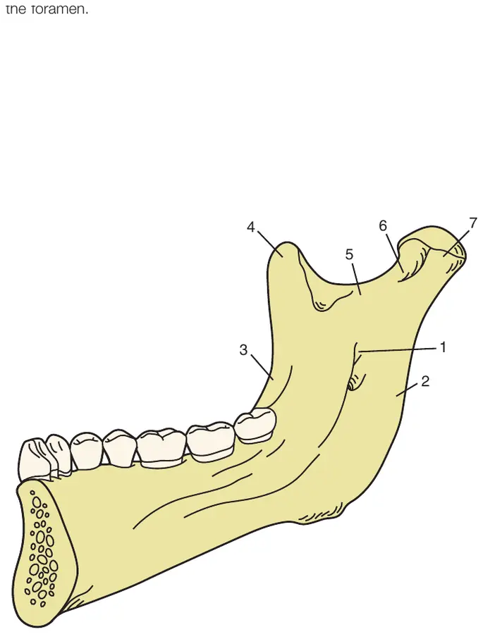

نسخه استخراجشده؛ ترجمه یا تأیید علمی انجام نشده است. وضعیت: captured
یکی از پرتکرارترین پرسشهای دندانپزشکان در دورههای بازآموزی بیحسی همین است: چرا در دندانی که پالپش بهطور حاد درگیر است، بیحسی پالپی مؤثر بهسختی به دست میآید؟

یعنی این یک مسئلهی حاشیهای نیست — دندانپزشکان باتجربه هم مدام با آن روبهرو میشوند.
قاعدهی کلی ساده است: اگر داروی بیحسی را به عصب برسانی، کنترل درد تقریباً تضمین است. ولی در برخی موقعیتهای بالینی «رسیدن به عصب» مشکلی تکرارشونده میماند؛ بهویژه در مندیبل و بیش از همه در مولرهای دائمی پایین.
و پاسخ صادقانه به اینکه آیا مسئله حل شده: هنوز نه؛ ولی داریم نزدیکتر میشویم.
پس اگر بیحسی مولر پایین ملتهب نمیگیرد، مشکل لزوماً از تو نیست — این یک محدودیت شناختهشدهی رشته است. ولی این به معنای تسلیم شدن نیست؛ در ادامه راهبردهای موجود را میبینی.
در ماگزیلا، انفیلتراسیون همچنان پرکاربردترین تکنیک برای بیحسی پالپی باقی مانده است.
ولی وقتی آناتومی ریشه واریانت است — مثلاً ریشهی پالاتال مولر بیش از معمول به سمت خط وسط منحرف شده — انفیلتراسیون باکال ممکن است ریشهی پالاتال را بیحس نکند، و این معمولاً تا وقتی کار به سمت پالاتال نرسیده معلوم نمیشود. بلاک PSA صرفنظر از آناتومی ریشهها بیحسی میدهد، و راهبردهای مکمل هم هستند، از جمله تزریق داخل لیگامان پریودنتال.
و یک نکته که از یونیت اول همین ماژول میآید و اینجا کاربردی میشود: در بافت ملتهب و اسیدی، افزودن حجم بیشتر در همان نقطه راهحل نیست. راهحل، تغییر محل (رفتن به بلاک بالادست) یا تغییر روش (تزریق مکمل داخل لیگامانی یا داخل استخوانی) است.
و یک راهبرد فارماکولوژیک: محلول بیحسی بافرشده روشی است که نرخ موفقیت بلاک آلوئولار تحتانی و سایر بلاکهای مندیبولار را افزایش داده است — و همچنین حساسیت بیمار حین پیشروی سوزن را کم میکند.
منطق بافربندی مستقیماً از درس اول این ماژول میآید: بالا بردن pH محلول، سهم فرم بازِ نفوذکننده را زیاد میکند — دقیقاً همان چیزی که بافت ملتهب از تو گرفته بود.
با این حال در مولر پایین با پالپیت برگشتناپذیر علامتدار، کارآزماییها هنوز افزایش معناداری در موفقیت نشان ندادهاند؛ بافربندی کمک است، نه تضمین.